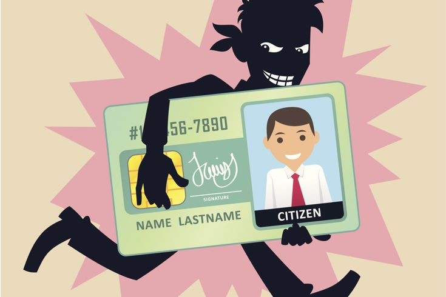

Cyber crime and online fraud cases arise when individuals or businesses suffer financial loss, data misuse, or deception through digital platforms. These offences commonly involve online transactions, fake communications, or misuse of technology , making timely legal assistance important.
Immediately block your bank account, card, or UPI to prevent further financial loss.
File a complaint with the bank and cyber crime authorities at the earliest possible stage.
Data privacy and data breach issues arise when personal or confidential information is accessed, disclosed, or misused without authorization. Such incidents can affect individuals, businesses, and organizations, leading to financial loss and reputational damage , making timely legal assistance important.
Change passwords and restrict access to compromised accounts or systems.
Inform the concerned company, platform, and appropriate cyber authorities.
Hacking, identity theft, and account misuse cases arise when unauthorized persons gain access to online accounts, personal data, or digital identities. Such incidents can result in financial loss, privacy invasion, and misuse of personal or professional accounts , making timely legal assistance important.

Immediately change passwords, enable two-factor authentication, and log out from all devices.
Inform the platform or service provider and report the incident to cyber crime authorities without delay.
Online defamation and reputation damage cases arise when false, misleading, or harmful content is published against an individual or business on digital platforms. Such content can seriously impact personal reputation, career prospects, and business credibility , making timely legal assistance important.
Take screenshots or recordings of posts, comments, URLs, and timestamps before they are removed.
Report defamatory material to the platform and file a complaint with cyber crime authorities if required.
E-commerce and digital payment disputes arise when consumers or businesses face issues related to online purchases, refunds, failed payments, or misuse of digital payment platforms. Such disputes can result in financial loss, service denial, or unfair trade practices , making timely legal assistance important.
Verify payment status, order details, and refund timelines on the platform or payment app.
Lodge a complaint with the e-commerce platform or payment service provider without delay.
Cyber complaint, FIR, and investigation support services assist individuals and businesses in reporting cyber offences and navigating the investigation process. Proper reporting and legal guidance are crucial for timely action and effective investigation , making early legal assistance important.
Clearly note the nature of the cyber incident, date, time, and platform involved.
Lodge the complaint with the appropriate cyber crime authority or police station without delay.
IT Act notices and legal compliance matters arise when individuals or businesses receive notices under the Information Technology Act or related cyber laws. Such notices may involve alleged violations, data handling issues, or online activity compliance , making timely legal assistance important.
Understand the allegations, sections involved, and response deadline mentioned in the notice.
Do not submit replies or explanations without proper legal guidance.
Online financial and UPI fraud cases arise when individuals or businesses suffer monetary loss through unauthorized digital transactions or deceptive payment practices. These incidents commonly involve UPI misuse, fake payment requests, or fraudulent banking communications , making immediate legal assistance important.
Contact your bank or payment app to block UPI, card, or account access without delay.
File a complaint with the bank and cyber crime authorities at the earliest possible stage.
Digital copyright infringement and content disputes arise when original digital content is copied, shared, or used without authorization. Such violations may affect creators, businesses, and online platforms, leading to financial loss and reputational harm , making timely legal assistance important.
Clearly identify the original work and the platform where it is being misused.
Submit copyright complaints or takedown requests to the concerned platform or infringer.
Phone: +91 7899469002
Email: sarada.law.chamber@gmail.com